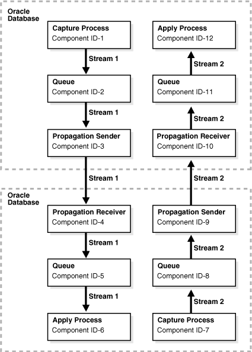
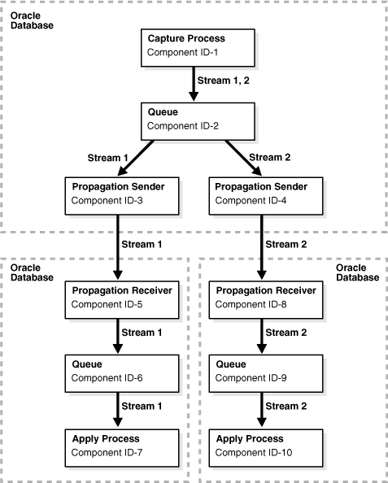

23 Monitoring the Oracle Streams Topology and Performance
The Oracle Streams Performance Advisor consists of the DBMS_STREAMS_ADVISOR_ADM PL/SQL package and a collection of data dictionary views. The Oracle Streams Performance Advisor enables you to monitor the topology and performance of an Oracle Streams environment. The Oracle Streams topology includes information about the components in an Oracle Streams environment, the links between the components, and the way information flows from capture to consumption. The Oracle Streams Performance Advisor also provides information about how Oracle Streams components are performing.
The following topics contain information about the Oracle Streams Performance Advisor:
23.1 About the Oracle Streams Topology
Oracle Streams enables you to send messages between multiple databases. An Oracle Streams environment can send the following types of messages:
-
Logical change records (LCRs) that contain database changes
-
User messages that contain custom information based on user-defined types
The Oracle Streams topology is a representation of the databases in an Oracle Streams environment, the Oracle Streams components configured in these databases, and the flow of messages between these components.
The messages in the environment flow in separate stream paths. A stream path begins where a capture process, a synchronous capture, or an application generates messages and enqueues them. The messages can flow through one or more propagations and queues in its stream path. The stream path ends where the messages are dequeued by an apply process, a messaging client, or an application.
Currently, the Oracle Streams topology only gathers information about a stream path if the stream path ends with an apply process. The Oracle Streams topology does not track stream paths that end when a messaging client or an application dequeues messages.
23.2 About the Oracle Streams Performance Advisor
The Oracle Streams Performance Advisor consists of the DBMS_STREAMS_ADVISOR_ADM PL/SQL package and a collection of data dictionary views. You can use the ANALYZE_CURRENT_PERFORMANCE procedure in the DBMS_STREAMS_ADVISOR_ADM package to gather information about the Oracle Streams topology and about the performance of the Oracle Streams components in the topology.
This section contains the following topics:
23.2.1 Oracle Streams Performance Advisor Data Dictionary Views
After information is gathered by the Oracle Streams Performance Advisor, you can view it by querying the following data dictionary views:
-
DBA_STREAMS_TP_COMPONENTcontains information about each Oracle Streams component at each database. -
DBA_STREAMS_TP_COMPONENT_LINKcontains information about how messages flow between Oracle Streams components. -
DBA_STREAMS_TP_COMPONENT_STATcontains temporary performance statistics and session statistics about each Oracle Streams component. -
DBA_STREAMS_TP_DATABASEcontains information about each database that contains Oracle Streams components. -
DBA_STREAMS_TP_PATH_BOTTLENECKcontains temporary information about Oracle Streams components that might be slowing down the flow of messages in a stream path. -
DBA_STREAMS_TP_PATH_STATcontains temporary performance statistics about each stream path that exists in the Oracle Streams topology.
The topology information is stored permanently in the following data dictionary views: DBA_STREAMS_TP_DATABASE, DBA_STREAMS_TP_COMPONENT, and DBA_STREAMS_TP_COMPONENT_LINK.
The following views contain temporary information: DBA_STREAMS_TP_COMPONENT_STAT, DBA_STREAMS_TP_PATH_BOTTLENECK, and DBA_STREAMS_TP_PATH_STAT. Some of the data in these views is retained only for the user session that runs the ANALYZE_CURRENT_PERFORMANCE procedure. When this user session ends, this temporary information is purged.
23.2.2 Oracle Streams Components and Statistics
The DBMS_STREAMS_ADVISOR_ADM package gathers information about the following Oracle Streams components:
-
A
QUEUEstores messages. The package gathers the following component-level statistics for queues:-
ENQUEUERATE -
SPILLRATE -
CURRENTQUEUESIZE
-
-
A
CAPTUREis a capture process. A capture process captures database changes in the redo log and enqueues the changes as logical change records (LCRs). Each capture process has the following subcomponents:-
LOGMINERBUILDERis a builder server. -
LOGMINERPREPARERis a preparer server. -
LOGMINERREADERis a reader server. -
CAPTURESESSIONis the capture process session.
The package gathers the following component-level statistics for each capture process (
CAPTURE):-
CAPTURERATE -
ENQUEUERATE -
LATENCY
The package also gathers session-level statistics for capture process subcomponents.
-
-
A
PROPAGATIONSENDERsends messages from a source queue to a destination queue. The package gathers the following component-level statistics for propagation senders:-
SENDRATE -
BANDWIDTH -
LATENCY
The package also gathers session-level statistics for propagation senders.
-
-
A
PROPAGATIONRECEIVERenqueues messages sent by propagation senders into a destination queue. The package gathers session-level statistics for propagation receivers. -
An
APPLYis an apply process. These components either apply messages directly or send messages to apply handlers. This type of component has the following subcomponents:-
APPLYREADERis a reader server. -
APPLYCOORDINATORis a coordinator process. -
APPLYSERVERis an apply server.
The package gathers the following component-level statistics for this component (
APPLY):-
MESSAGEAPPLYRATE -
TRANSACTIONAPPLYRATE -
LATENCY
The package also gathers session-level statistics for the subcomponents.
-
When the package gathers session-level statistics for a component or subcomponent, the session-level statistics include the following:
-
IDLEpercentage -
FLOWCONTROLpercentage -
EVENTpercentage for wait events
Note:
Currently, the DBMS_STREAMS_ADVISOR_ADM package does not gather information about synchronous captures or messaging clients.
See Also:
-
"Viewing Component-Level Statistics" for detailed information about component-level statistics
-
"Viewing Session-Level Statistics" for detailed information about session-level statistics
23.3 About Stream Paths in an Oracle Streams Topology
In the Oracle Streams topology, a stream path is a flow of messages from a source to a destination. A stream path begins where a capture process, synchronous capture, or application enqueues messages into a queue. A stream path ends where an apply process dequeues the messages. The stream path might flow through multiple queues and propagations before it reaches an apply process. Therefore, a single stream path can consist of multiple source/destination component pairs before it reaches last component.
The Oracle Streams topology assigns a number to each stream path so that you can monitor each one easily. The Oracle Streams topology also assigns a number to each link between two components in a stream path. The number specifies the position of the link in the overall stream path.
Table 23-1 shows the position of each link in a sample stream path.
Table 23-1 Position of Each Link in a Sample Stream Path
| Start Component | End Component | Position |
|---|---|---|
|
Capture process |
Queue |
1 |
|
Queue |
Propagation sender |
2 |
|
Propagation sender |
Propagation receiver |
3 |
|
Propagation receiver |
Queue |
4 |
|
Queue |
Apply process |
5 |
When the Oracle Streams Performance Advisor gathers information about an Oracle Streams environment, it tracks stream paths by starting with each apply process and working backward to its source. When a capture process is the source, the Oracle Streams Performance Advisor tracks the path from the apply process back to the capture process. When a synchronous capture or an application that enqueues messages is the source, the Oracle Streams Performance Advisor tracks the path from the apply process back to the queue into which the messages are enqueued.
The following sections describe sample replication environments and the stream paths in each one:
See Also:
Oracle Streams Replication Administrator's Guide for information about best practices for Oracle Streams replication environments
23.3.1 Separate Stream Paths in an Oracle Streams Environment
Consider an Oracle Streams environment with two databases. Each database captures changes made to the replicated database objects with a capture process and sends the changes to the other database, where they are applied by an apply process. The stream paths in this environment are completely separate.
Figure 23-1 shows an example of this type of Oracle Streams replication environment.
Figure 23-1 Oracle Streams Topology with Two Separate Stream Paths
Description of "Figure 23-1 Oracle Streams Topology with Two Separate Stream Paths"
Notice that the Oracle Streams Performance Advisor assigns a component ID to each Oracle Streams component and a path ID to each path. The Oracle Streams topology in Figure 23-1 shows the following information:
-
There are twelve Oracle Streams components in the Oracle Streams environment.
-
There are two stream paths in the Oracle Streams environment.
-
Stream path 1 starts with component 1 and ends with component 6.
-
Stream path 2 starts with component 7 and ends with component 12.
23.3.2 Shared Stream Paths in an Oracle Streams Replication Environment
When there are multiple apply processes that apply changes generated by a single source, a stream path splits into multiple stream paths. In this case, part of a stream path is shared, but the path splits into two or more distinct stream paths.
Figure 23-2 shows this type of Oracle Streams environment.
Figure 23-2 Oracle Streams Topology with Multiple Apply Processes for a Single Source
Description of "Figure 23-2 Oracle Streams Topology with Multiple Apply Processes for a Single Source"
The Oracle Streams topology in Figure 23-2 shows the following information:
-
There are ten Oracle Streams components in the Oracle Streams environment.
-
There are two stream paths in the Oracle Streams environment.
-
Stream path 1 starts with component 1 and ends with component 7.
-
Stream path 2 starts with component 1 and ends with component 10.
-
The messages flowing between component 1 and component 2 are in both path 1 and path2.
See Also:
23.4 About the Information Gathered by the Oracle Streams Performance Advisor
The ANALYZE_CURRENT_PERFORMANCE procedure in the DBMS_STREAMS_ADVISOR_ADM package gathers information about the Oracle Streams topology and the performance of Oracle Streams components. The procedure stores the information in a collection of data dictionary views. To use the Oracle Streams Performance Advisor effectively, it is important to understand how the procedure gathers information and calculates statistics.
The procedure takes snapshots of the Oracle Streams environment to gather information and calculate statistics. For some statistics, the information in a single snapshot is sufficient. For example, only one snapshot is needed to determine the current number of messages in a queue. However, to calculate other statistics, the procedure must compare two snapshots. These statistics include the rate, bandwidth, event, and flow control statistics. The first time the procedure is run in a user session, it takes two snapshots to calculate these statistics. In each subsequent run in the same user session, the procedure takes one snapshot and compares it with the snapshot taken during the previous run.
Table 23-2 illustrates how the procedure gathers information in each advisor run in a single user session.
Table 23-2 How the Oracle Streams Performance Advisor Gathers Information in a Session
| Advisor Run | Information Gathered |
|---|---|
|
1 |
|
|
2 |
|
|
3 |
|
For the best results in an advisor run, meet the following criteria:
-
Ensure that as many Oracle Streams components as possible are enabled during the time period between the two snapshots used in the advisor run. Specifically, capture processes, propagations, apply processes should be enabled, queues should be started, and database links should be active.
-
If data is replicated in the Oracle Streams environment, then ensure that the replicated database objects are experiencing an average, or near average, number of changes during the time period between the two snapshots used in the advisor run. The Oracle Streams Performance Advisor gathers more accurate statistics if it is run when the Oracle Streams replication environment is experiencing typical replication activity.
-
If messages are sent by applications in the Oracle Streams environment, then ensure that the applications are sending an average, or near average, number of messages during the time period between the two snapshots used in the advisor run. The Oracle Streams Performance Advisor gathers more accurate statistics if it is run when the Oracle Streams messaging environment is sending a typical number of messages.
23.5 Gathering Information About the Oracle Streams Topology and Performance
To gather information about the Oracle Streams topology and Oracle Streams performance, complete the following steps:
Complete these steps whenever you want to monitor the current performance of your Oracle Streams environment.
You should also run the ANALYZE_CURRENT_PERFORMANCE procedure when new Oracle Streams components are added to any database in the Oracle Streams environment. Running the procedure updates the Oracle Streams topology with information about any new components.
See Also:
-
Oracle Database PL/SQL Packages and Types Reference for information about the
DBMS_STREAMS_ADVISOR_ADMpackage
23.6 Viewing the Oracle Streams Topology and Analyzing Oracle Streams Performance
This section contains several queries that you can use to view your Oracle Streams topology and monitor the performance of your Oracle Streams components. The queries specify the views described in "About the Oracle Streams Topology".
The queries in this section can be run in any Oracle Stream environment. However, the output shown for these queries is based on the sample Oracle Streams replication environment shown in Figure 23-3.
Figure 23-3 Sample Oracle Streams Replication Environment

Description of "Figure 23-3 Sample Oracle Streams Replication Environment"
The Oracle Streams Replication Administrator's Guide contains instructions for configuring the Oracle Streams replication environment shown in Figure 23-3. This environment contains both of the following types of stream paths:
-
Separate stream paths flow from the
spoke1.example.comdatabase to thehub.example.comdatabase and from thespoke2.example.comdatabase to thehub.example.comdatabase. This type of stream path is described in "Separate Stream Paths in an Oracle Streams Environment". -
Two stream paths that share a portion of the path flow from the
hub.example.comdatabase to thespoke1.example.comandspoke2.example.comdatabases. This type of stream path is described in "Shared Stream Paths in an Oracle Streams Replication Environment".
This section contains the following topics:
23.6.1 Viewing the Oracle Streams Topology
To view the Oracle Streams topology, you must first gather information about the Oracle Streams environment using the DBMS_STREAMS_ADVISOR_ADM package. See "Gathering Information About the Oracle Streams Topology and Performance".
The following sections explain how to view different types of information in an Oracle Streams topology:
23.6.1.1 Viewing the Databases in the Oracle Streams Environment
You can view the following information about the databases in an Oracle Streams environment:
-
The global name of each database
-
The last time the Oracle Streams Performance Advisor was run at each database
-
The version number of each database
-
The compatibility level of each database
-
Whether each database has access to the Oracle Diagnostics Pack and Oracle Tuning Pack
To display this information, run the following query:
COLUMN GLOBAL_NAME HEADING 'Global Name' FORMAT A15 COLUMN LAST_QUERIED HEADING 'Last|Queried' COLUMN VERSION HEADING 'Version' FORMAT A15 COLUMN COMPATIBILITY HEADING 'Compatibility' FORMAT A15 COLUMN MANAGEMENT_PACK_ACCESS HEADING 'Management Pack' FORMAT A20 SELECT GLOBAL_NAME, LAST_QUERIED, VERSION, COMPATIBILITY, MANAGEMENT_PACK_ACCESS FROM DBA_STREAMS_TP_DATABASE;
The following output shows the databases in the Oracle Streams replication environment described in "Viewing the Oracle Streams Topology and Analyzing Oracle Streams Performance":
Last Global Name Queried Version Compatibility Management Pack --------------- --------- --------------- --------------- -------------------- HUB.EXAMPLE.COM 08-APR-08 11.1.0.7.0 11.1.0 DIAGNOSTIC+TUNING SPOKE1.EXAMPLE. 08-APR-08 11.1.0.7.0 11.1.0 DIAGNOSTIC+TUNING COM SPOKE2.EXAMPLE. 08-APR-08 11.1.0.7.0 11.1.0 DIAGNOSTIC+TUNING COM
This output shows the following information about the databases in the Oracle Streams environment:
-
The
GlobalNamecolumn shows that the global names of the databases arehub.example.com,spoke1.example.com, andspoke2.example.com. -
The
LastQueriedcolumn shows that the Oracle Streams Performance Advisor was last run on April 8, 2008 at each database. -
The
Versioncolumn shows that version of each database is Oracle Database 11g Release 1 (11.1.0.7.0). -
The
Compatibilitycolumn shows that the compatibility level of each database is11.1.0. -
The
ManagementPackcolumn shows that each database has access to the Oracle Diagnostics Pack and Oracle Tuning Pack.
See Also:
Oracle Database Upgrade Guide for information about database compatibility
23.6.1.2 Viewing the Oracle Streams Components at Each Database
You can view the following information about the components in an Oracle Streams environment:
-
The component ID for each Oracle Streams component. The Oracle Streams topology assigns an ID number to each component and uses the number to track information about the component and about the stream path that flows through the component.
-
The name of the Oracle Streams component. For capture processes and apply processes, the query lists the name of each process. For queues, the query lists the name of each queue. For propagations, two Oracle Streams components are tracked in the Oracle Streams topology:
-
The name of a propagation sender is the source queue of the propagation and the destination queue and database to which the propagation sends messages. For example, a propagation sender with the
strmadmin.source_hnssource queue that sends messages to thestrmadmin.destination_spoke1destination queue at thespoke1.example.comdatabase is shown in the following way:"STRMADMIN"."SOURCE_HNS"=>"STRMADMIN"."DESTINATION_SPOKE1" @SPOKE1.EXAMPLE.COM
-
The name of a propagation receiver is the source queue and database from which the messages are sent and the destination queue for the propagation. For example, a propagation receiver that gets messages from the
strmadmin.source_hnssource queue at thehub.example.comdatabase and enqueues them into thestrmadmin.destination_spoke1destination queue is shown in the following way:"STRMADMIN"."SOURCE_HNS"@HUB.EXAMPLE.COM=>"STRMADMIN". "DESTINATION_SPOKE1"
-
-
The type of the Oracle Streams component. The following types are possible:
-
CAPTUREfor capture processes -
QUEUEfor queues -
PROPAGATIONSENDERfor propagation senders -
PROPAGATIONRECEIVERfor propagation receivers -
APPLYfor apply processes
-
-
The database that contains the component
To display this information, run the following query:
COLUMN COMPONENT_ID HEADING 'ID' FORMAT 999 COLUMN COMPONENT_NAME HEADING 'Name' FORMAT A43 COLUMN COMPONENT_TYPE HEADING 'Type' FORMAT A20 COLUMN COMPONENT_DB HEADING 'Database' FORMAT A10 SELECT COMPONENT_ID, COMPONENT_NAME, COMPONENT_TYPE, COMPONENT_DB FROM DBA_STREAMS_TP_COMPONENT ORDER BY COMPONENT_ID;
The following output shows the components in the Oracle Streams replication environment described in "Viewing the Oracle Streams Topology and Analyzing Oracle Streams Performance":
ID Name Type Database
---- ------------------------------------------- -------------------- ----------
1 "STRMADMIN"."DESTINATION_SPOKE1" QUEUE HUB.EXAMPL
E.COM
2 "STRMADMIN"."DESTINATION_SPOKE2" QUEUE HUB.EXAMPL
E.COM
3 "STRMADMIN"."SOURCE_HNS" QUEUE HUB.EXAMPL
E.COM
4 "STRMADMIN"."SOURCE_HNS"=>"STRMADMIN"."DEST PROPAGATION SENDER HUB.EXAMPL
INATION_SPOKE1"@SPOKE1.EXAMPLE.COM E.COM
5 "STRMADMIN"."SOURCE_HNS"=>"STRMADMIN"."DEST PROPAGATION SENDER HUB.EXAMPL
INATION_SPOKE2"@SPOKE2.EXAMPLE.COM E.COM
6 "STRMADMIN"."SOURCE_HNS"@SPOKE1.EXAMPLE.COM PROPAGATION RECEIVER HUB.EXAMPL
=>"STRMADMIN"."DESTINATION_SPOKE1" E.COM
7 "STRMADMIN"."SOURCE_HNS"@SPOKE2.EXAMPLE.COM PROPAGATION RECEIVER HUB.EXAMPL
=>"STRMADMIN"."DESTINATION_SPOKE2" E.COM
8 APPLY_SPOKE1 APPLY HUB.EXAMPL
E.COM
9 APPLY_SPOKE2 APPLY HUB.EXAMPL
E.COM
10 CAPTURE_HNS CAPTURE HUB.EXAMPL
E.COM
11 "STRMADMIN"."DESTINATION_SPOKE1" QUEUE SPOKE1.EXA
MPLE.COM
12 "STRMADMIN"."SOURCE_HNS" QUEUE SPOKE1.EXA
MPLE.COM
13 "STRMADMIN"."SOURCE_HNS"=>"STRMADMIN"."DEST PROPAGATION SENDER SPOKE1.EXA
INATION_SPOKE1"@HUB.EXAMPLE.COM MPLE.COM
14 "STRMADMIN"."SOURCE_HNS"@HUB.EXAMPLE.COM=>" PROPAGATION RECEIVER SPOKE1.EXA
STRMADMIN"."DESTINATION_SPOKE1" MPLE.COM
15 APPLY_SPOKE1 APPLY SPOKE1.EXA
MPLE.COM
16 CAPTURE_HNS CAPTURE SPOKE1.EXA
MPLE.COM
17 "STRMADMIN"."DESTINATION_SPOKE2" QUEUE SPOKE2.EXA
MPLE.COM
18 "STRMADMIN"."SOURCE_HNS" QUEUE SPOKE2.EXA
MPLE.COM
19 "STRMADMIN"."SOURCE_HNS"=>"STRMADMIN"."DEST PROPAGATION SENDER SPOKE2.EXA
INATION_SPOKE2"@HUB.EXAMPLE.COM MPLE.COM
20 "STRMADMIN"."SOURCE_HNS"@HUB.EXAMPLE.COM=>" PROPAGATION RECEIVER SPOKE2.EXA
STRMADMIN"."DESTINATION_SPOKE2" MPLE.COM
21 APPLY_SPOKE2 APPLY SPOKE2.EXA
MPLE.COM
22 CAPTURE_HNS CAPTURE SPOKE2.EXA
MPLE.COM
See Also:
-
"Viewing Component-Level Statistics" for a query that shows performance statistics for each Oracle Streams component
-
Oracle Streams Extended Examples for information about the n-way replication environment shown in the output
23.6.1.3 Viewing Each Stream Path in an Oracle Streams Topology
You can view the following information about the stream paths in an Oracle Streams topology:
-
The path ID. The Oracle Streams topology assigns an ID number to each stream path it identifies. The path ID is associated with each link in the path. For example, a single path ID can be associated with the following component links:
-
Capture process to queue
-
Queue to propagation sender
-
Propagation sender to propagation receiver
-
Propagation receiver to queue
-
Queue to apply process
-
-
The source component ID. A source component is a component from which messages flow to another component.
-
The name of the source component. See "Viewing the Oracle Streams Components at Each Database" for information about how components are named in the query output.
-
The destination component ID. A destination component receives messages from another component.
-
The name of the destination component.
-
The position in the stream path shows the location of a particular link in a path. For example, a position might be the first link in a path, the second link in a path, and so on.
To display this information, run the following query:
COLUMN PATH_ID HEADING 'Path|ID' FORMAT 9999
COLUMN SOURCE_COMPONENT_ID HEADING 'Source|Component|ID' FORMAT 9999
COLUMN SOURCE_COMPONENT_NAME HEADING 'Source|Component|Name' FORMAT A20
COLUMN DESTINATION_COMPONENT_ID HEADING 'Dest|Component|ID' FORMAT 9999
COLUMN DESTINATION_COMPONENT_NAME HEADING 'Dest|Component|Name' FORMAT A15
COLUMN POSITION HEADING 'Position' FORMAT 9999
SELECT PATH_ID,
SOURCE_COMPONENT_ID,
SOURCE_COMPONENT_NAME,
DESTINATION_COMPONENT_ID,
DESTINATION_COMPONENT_NAME,
POSITION
FROM DBA_STREAMS_TP_COMPONENT_LINK
ORDER BY PATH_ID, POSITION;
The following output shows the paths in the Oracle Streams topology for the components listed in "Viewing the Oracle Streams Components at Each Database":
Source Source Dest Dest
Path Component Component Component Component
ID ID Name ID Name Position
----- --------- -------------------- --------- --------------- --------
1 16 CAPTURE_HNS 12 "STRMADMIN"."SO 1
URCE_HNS"
1 12 "STRMADMIN"."SOURCE_ 13 "STRMADMIN"."SO 2
HNS" URCE_HNS"=>"STR
MADMIN"."DESTIN
ATION_SPOKE1"@H
UB.EXAMPLE.COM
1 13 "STRMADMIN"."SOURCE_ 6 "STRMADMIN"."SO 3
HNS"=>"STRMADMIN"."D URCE_HNS"@SPOKE
ESTINATION_SPOKE1"@H 1.EXAMPLE.COM=>
UB.EXAMPLE.COM "STRMADMIN"."DES
TINATION_SPOKE1"
1 6 "STRMADMIN"."SOURCE_ 1 "STRMADMIN"."DE 4
HNS"@SPOKE1.EXAMPLE. STINATION_SPOKE
COM=>"STRMADMIN"."DE 1"
STINATION_SPOKE1"
1 1 "STRMADMIN"."DESTINA 8 APPLY_SPOKE1 5
TION_SPOKE1"
2 22 CAPTURE_HNS 18 "STRMADMIN"."SO 1
URCE_HNS"
2 18 "STRMADMIN"."SOURCE_ 19 "STRMADMIN"."SO 2
HNS" URCE_HNS"=>"STR
MADMIN"."DESTIN
ATION_SPOKE2"@H
UB.EXAMPLE.COM
2 19 "STRMADMIN"."SOURCE_ 7 "STRMADMIN"."SO 3
HNS"=>"STRMADMIN"."D URCE_HNS"@SPOKE
ESTINATION_SPOKE2"@H 2.EXAMPLE.COM=>
UB.EXAMPLE.COM "STRMADMIN"."DES
TINATION_SPOKE2"
2 7 "STRMADMIN"."SOURCE_ 2 "STRMADMIN"."DE 4
HNS"@SPOKE2.EXAMPLE. STINATION_SPOKE
COM=>"STRMADMIN"."DE 2"
STINATION_SPOKE2"
2 2 "STRMADMIN"."DESTINA 9 APPLY_SPOKE2 5
TION_SPOKE2"
3 10 CAPTURE_HNS 3 "STRMADMIN"."SO 1
URCE_HNS"
3 3 "STRMADMIN"."SOURCE_ 4 "STRMADMIN"."SO 2
HNS" URCE_HNS"=>"STR
MADMIN"."DESTIN
ATION_SPOKE1"@S
POKE1.EXAMPLE.CO
M
3 4 "STRMADMIN"."SOURCE_ 14 "STRMADMIN"."SO 3
HNS"=>"STRMADMIN"."D URCE_HNS"@HUB.N
ESTINATION_SPOKE1"@S ET=>"STRMADMIN"
POKE1.EXAMPLE.COM ."DESTINATION_S
POKE1"
3 14 "STRMADMIN"."SOURCE_ 11 "STRMADMIN"."DE 4
HNS"@HUB.EXAMPLE.COM STINATION_SPOKE
=>"STRMADMIN"."DESTI 1"
NATION_SPOKE1"
3 11 "STRMADMIN"."DESTINA 15 APPLY_SPOKE1 5
TION_SPOKE1"
4 10 CAPTURE_HNS 3 "STRMADMIN"."SO 1
URCE_HNS"
4 3 "STRMADMIN"."SOURCE_ 5 "STRMADMIN"."SO 2
HNS" URCE_HNS"=>"STR
MADMIN"."DESTIN
ATION_SPOKE2"@S
POKE2.EXAMPLE.C
OM
4 5 "STRMADMIN"."SOURCE_ 20 "STRMADMIN"."SO 3
HNS"=>"STRMADMIN"."D URCE_HNS"@HUB.N
ESTINATION_SPOKE2"@S ET=>"STRMADMIN"
POKE2.EXAMPLE.COM ."DESTINATION_S
POKE2"
4 20 "STRMADMIN"."SOURCE_ 17 "STRMADMIN"."DE 4
HNS"@HUB.EXAMPLE.COM STINATION_SPOKE
=>"STRMADMIN"."DESTI 2"
NATION_SPOKE2"
4 17 "STRMADMIN"."DESTINA 21 APPLY_SPOKE2 5
TION_SPOKE2"
23.6.2 Viewing Performance Statistics for Oracle Streams Components
The DBMS_STREAMS_ADVISOR_ADM package and the Oracle Streams topology views comprise the Oracle Streams Performance Advisor. The Oracle Streams topology views enable you to display and analyze performance statistics for the Oracle Streams components in your environment.
To view performance statistics for Oracle Streams components, you must first gather information about the Oracle Streams environment using the DBMS_STREAMS_ADVISOR_ADM package. See "Gathering Information About the Oracle Streams Topology and Performance".
The following sections explain how to view performance statistics for Oracle Streams components:
-
Checking for Bottleneck Components in the Oracle Streams Topology
-
Viewing Statistics for the Stream Paths in an Oracle Streams Environment
Note:
The performance of Oracle Streams components depends on several factors, including the computer equipment used in the environment and the speed of the network.
23.6.2.1 Checking for Bottleneck Components in the Oracle Streams Topology
A bottleneck component is the busiest component or the component with the least amount of idle time. You can view the following information about the bottleneck components in an Oracle Streams environment:
-
The path ID of the path that includes the component.
-
The component ID for each Oracle Streams component. The Oracle Streams topology assigns an ID number to each component and uses the number to track information about the component and about the stream path that flows through the component.
-
The name of the Oracle Streams component. See "Viewing the Oracle Streams Components at Each Database" for information about how components are named in the query output.
-
The type of the Oracle Streams component. The following types are possible:
-
CAPTUREfor capture processes -
QUEUEfor queues -
PROPAGATIONSENDERfor propagation senders -
PROPAGATIONRECEIVERfor propagation receivers -
APPLYfor apply processes
-
-
The database that contains the component
Run the following query to check for bottleneck components in your Oracle Streams environment:
COLUMN PATH_ID HEADING 'Path ID' FORMAT 999
COLUMN COMPONENT_ID HEADING 'Component ID' FORMAT 999
COLUMN COMPONENT_NAME HEADING 'Name' FORMAT A20
COLUMN COMPONENT_TYPE HEADING 'Type' FORMAT A20
COLUMN COMPONENT_DB HEADING 'Database' FORMAT A15
SELECT PATH_ID,
COMPONENT_ID,
COMPONENT_NAME,
COMPONENT_TYPE,
COMPONENT_DB
FROM DBA_STREAMS_TP_PATH_BOTTLENECK
WHERE BOTTLENECK_IDENTIFIED='YES' AND
ADVISOR_RUN_ID=2
ORDER BY PATH_ID, COMPONENT_ID;
This example uses 2 for the ADVISOR_RUN_ID in the WHERE clause. Substitute the advisor run ID for the advisor run you want to query. See "Gathering Information About the Oracle Streams Topology and Performance" for information about determining the ADVISOR_RUN_ID.
The following output shows the bottleneck components for the components listed in "Viewing the Oracle Streams Components at Each Database":
Path ID Component ID Name Type Database
------- ------------ -------------------- -------------------- ---------------
1 6 "STRMADMIN"."SOURCE_ PROPAGATION RECEIVER HUB.EXAMPLE.COM
HNS"@SPOKE1.EXAMPLE.
COM=>"STRMADMIN"."DE
STINATION_SPOKE1"
3 10 CAPTURE_HNS CAPTURE HUB.EXAMPLE.COM
4 10 CAPTURE_HNS CAPTURE HUB.EXAMPLE.COM
If this query returns no results, then the Oracle Streams Performance Advisor did not identify any bottleneck components in your environment. However, if this query returns one or more bottleneck components, then check the status of these components. If they are disabled, then you can enable them. If the components are enabled, then you can examine the components to see if they can be modified to perform better.
In some cases, the Oracle Streams Performance Advisor cannot determine whether a component is a bottleneck component. To view these components, set BOTTLENECK_IDENTIFIED to 'NO' when you query the DBA_STREAMS_TP_PATH_BOTTLENECK view. The output for the ADVISOR_RUN_REASON column shows why the Oracle Streams Performance Advisor could not determine whether the component is a bottleneck component. The following reasons can be specified in the ADVISOR_RUN_REASON column output:
-
PRE-11.1DATABASEEXISTSmeans that the component is in a stream path that includes a database before Oracle Database 11g Release 1. Bottleneck analysis is not performed on these components. -
DIAGNOSTICPACKREQUIREDmeans that the component is in a stream path that includes a database that does not have the Oracle Diagnostics Pack. Bottleneck analysis is not performed on these components. -
NOBOTTLENECKIDENTIFIEDmeans that either no bottleneck was identified in a stream path or that there might be more than one bottleneck component in the stream path.
23.6.2.2 Viewing Component-Level Statistics
You can view statistics for the Oracle Streams components in the Oracle Streams topology. The query in this section displays the following information for each component:
-
The ID of the path to which the component belongs
-
The name of the Oracle Streams component
-
The type of the Oracle Streams component. The following types are possible:
-
CAPTUREfor capture processes -
QUEUEfor queues -
PROPAGATIONSENDERfor propagation senders -
PROPAGATIONRECEIVERfor propagation receivers -
APPLYfor apply processes
-
-
The statistic that was gathered for the component
-
The value and unit of the statistic. For example, a
LATENCYstatistic shows a number for the value andSECONDSfor the unit. ATRANSACTIONAPPLYRATEstatistic shows a number for the value andTRANSACTIONSPERSECONDfor the unit.
The ANALYZE_CURRENT_PERFORMANCE procedure in the DBMS_STREAMS_ADVISOR_ADM package gathers the statistics returned by the query in this section. Therefore, the statistics returned by the query were the current statistics when the procedure was run. The statistics are not updated automatically.
Table 23-3 describes each of the statistics that can be returned by the query in this section:
Table 23-3 Component-Level Statistics for Oracle Streams Components
| Component Type | Statistic | Unit | Description |
|---|---|---|---|
|
|
|
|
The average number of database changes in the redo log scanned by the capture process each second. A capture process captures and enqueues the scanned changes that satisfy its rule sets. |
|
|
|
|
The average number of logical change records (LCRs) enqueued by the capture process each second. |
|
|
|
|
The amount of time between when the last redo entry became available for the capture process and the time when the last redo entry scanned by the capture process was recorded in the redo log. The purpose of the statistic is to show the amount of time between when a change is recorded in the redo log and when the redo record is scanned by the capture process. The capture process might or might not enqueue a scanned change. A capture process only enqueues a change if the change satisfies its rule sets. |
|
|
|
|
The average number of messages sent each second by the propagation sender. |
|
|
|
|
The average number of bytes sent each second by the propagation sender. |
|
|
|
|
The amount of time between when a message was created at the source database and when the message was sent to the destination queue by the propagation sender. The value shown is for a single message that was sent from the source queue to the destination queue by the propagation sender. This message was the last message sent by the propagation sender when the Depending on the type of message sent by the propagation, message creation time is one of the following:
|
|
|
|
|
The average number of messages applied each second by the apply process. A captured LCR or persistent LCR can be applied in one of the following ways:
A persistent user message can be applied in one of the following ways:
|
|
|
|
|
The average number of transactions applied by the apply process each second. Transactions typically include multiple messages. A transaction that includes captured LCRs or persistent LCRs can be applied in one of the following ways:
A transaction that includes persistent user messages can be applied in one of the following ways:
|
|
|
|
|
For apply processes, the amount of time between when the message was created at a source database and when the message was applied by the apply process at the destination database. The value shown is for a single message that was applied by the apply process. This message was the last message applied when the Depending on the type of message applied, message creation time is one of the following:
|
|
|
|
|
The average number of messages enqueued into the queue each second. |
|
|
|
|
The average number of messages that spilled from the buffered queue to the queue table each second. |
|
|
|
|
The number of messages in the queue when the |
|
|
|
|
The percentage of time that the Oracle Streams component spent waiting because of a wait event. The Oracle Streams Performance Advisor only gathers information about the top three events for each component. For example, a capture process might wait for a redo log file to become available. |
The following are general considerations for these performance statistics:
-
Regarding rate, bandwidth, and event statistics, the time period is calculated as the time difference between the two snapshots used by the
ANALYZE_CURRENT_PERFORMANCEprocedure in the same user session. See "About the Information Gathered by the Oracle Streams Performance Advisor" for information about the snapshots. When a user session ends, the rate, bandwidth, and event statistics are purged. -
When a latency statistic is -1 seconds, the
ANALYZE_CURRENT_PERFORMANCEprocedure could not gather statistics for the component when it was run. In most cases, this result indicates that the component was disabled when the procedure was run. For example, if theLATENCYstatistic for an apply process is -1, then the component was probably disabled when theANALYZE_CURRENT_PERFORMANCEprocedure was run.
To display performance statistics for the components in an Oracle Streams topology, run the following query:
COLUMN PATH_ID HEADING 'Path|ID' FORMAT 999
COLUMN COMPONENT_ID HEADING 'Component|ID' FORMAT 999
COLUMN COMPONENT_NAME HEADING 'Name' FORMAT A20
COLUMN COMPONENT_TYPE HEADING 'Type' FORMAT A12
COLUMN STATISTIC_NAME HEADING 'Statistic' FORMAT A15
COLUMN STATISTIC_VALUE HEADING 'Value' FORMAT 99999999999.99
COLUMN STATISTIC_UNIT HEADING 'Unit' FORMAT A15
SELECT DISTINCT
cp.PATH_ID,
cs.COMPONENT_ID,
cs.COMPONENT_NAME,
cs.COMPONENT_TYPE,
cs.STATISTIC_NAME,
cs.STATISTIC_VALUE,
cs.STATISTIC_UNIT
FROM DBA_STREAMS_TP_COMPONENT_STAT cs,
(SELECT PATH_ID, SOURCE_COMPONENT_ID AS COMPONENT_ID
FROM DBA_STREAMS_TP_COMPONENT_LINK
UNION
SELECT PATH_ID, DESTINATION_COMPONENT_ID AS COMPONENT_ID
FROM DBA_STREAMS_TP_COMPONENT_LINK) cp
WHERE cs.ADVISOR_RUN_ID = 2 AND
cs.SESSION_ID IS NULL AND
cs.SESSION_SERIAL# IS NULL AND
cs.COMPONENT_ID = cp.COMPONENT_ID
ORDER BY PATH_ID, COMPONENT_ID, COMPONENT_NAME, COMPONENT_TYPE, STATISTIC_NAME;
This example uses 2 for the ADVISOR_RUN_ID in the WHERE clause. Substitute the advisor run ID for the advisor run you want to query. See "Gathering Information About the Oracle Streams Topology and Performance" for information about determining the ADVISOR_RUN_ID.
The following output shows a partial list of the performance statistics for the components listed in "Viewing the Oracle Streams Components at Each Database". Specifically, the following output shows performance statistics for the components in stream path 1 and stream path 3:
Path Component
ID ID Name Type Statistic Value Unit
---- ---------- -------------------- ------------ --------------- --------------- ---------------
1 1 "STRMADMIN"."DESTINA QUEUE CURRENT QUEUE S .00 NUMBER OF MESSA
TION_SPOKE1" IZE GES
1 1 "STRMADMIN"."DESTINA QUEUE ENQUEUE RATE 2573.21 MESSAGES PER SE
TION_SPOKE1" COND
1 1 "STRMADMIN"."DESTINA QUEUE SPILL RATE .00 MESSAGES PER SE
TION_SPOKE1" COND
1 6 "STRMADMIN"."SOURCE_ PROPAGATION EVENT: CPU + Wa 32.55 PERCENT
HNS"@SPOKE1.EXAMPLE. RECEIVER it for CPU
COM=>"STRMADMIN"."DE
STINATION_SPOKE1"
1 6 "STRMADMIN"."SOURCE_ PROPAGATION EVENT: SQL*Net 23.62 PERCENT
HNS"@SPOKE1.EXAMPLE. RECEIVER more data from
COM=>"STRMADMIN"."DE client
STINATION_SPOKE1"
1 6 "STRMADMIN"."SOURCE_ PROPAGATION EVENT: latch: r 2.10 PERCENT
HNS"@SPOKE1.EXAMPLE. RECEIVER ow cache object
COM=>"STRMADMIN"."DE s
STINATION_SPOKE1"
1 8 APPLY_SPOKE1 APPLY EVENT: CPU + Wa 23.10 PERCENT
it for CPU
1 8 APPLY_SPOKE1 APPLY EVENT: latch: r 1.31 PERCENT
ow cache object
s
1 8 APPLY_SPOKE1 APPLY EVENT: latch: s 1.57 PERCENT
hared pool
1 8 APPLY_SPOKE1 APPLY LATENCY 2.13 SECONDS
1 8 APPLY_SPOKE1 APPLY MESSAGE APPLY R 10004.00 MESSAGES PER SE
ATE COND
1 8 APPLY_SPOKE1 APPLY TRANSACTION APP 100.00 TRANSACTIONS PE
LY RATE R SECOND
1 12 "STRMADMIN"."SOURCE_ QUEUE CURRENT QUEUE S .00 NUMBER OF MESSA
HNS" IZE GES
1 12 "STRMADMIN"."SOURCE_ QUEUE ENQUEUE RATE 9932.00 MESSAGES PER SE
HNS" COND
1 12 "STRMADMIN"."SOURCE_ QUEUE SPILL RATE .00 MESSAGES PER SE
HNS" COND
1 13 "STRMADMIN"."SOURCE_ PROPAGATION BANDWIDTH 32992.96 BYTES PER SECON
HNS"=>"STRMADMIN"."D SENDER D
ESTINATION_SPOKE1"@H
UB.EXAMPLE.COM
1 13 "STRMADMIN"."SOURCE_ PROPAGATION EVENT: CPU + Wa 35.96 PERCENT
HNS"=>"STRMADMIN"."D SENDER it for CPU
ESTINATION_SPOKE1"@H
UB.EXAMPLE.COM
1 13 "STRMADMIN"."SOURCE_ PROPAGATION EVENT: SQL*Net .26 PERCENT
HNS"=>"STRMADMIN"."D SENDER message to dbli
ESTINATION_SPOKE1"@H nk
UB.EXAMPLE.COM
1 13 "STRMADMIN"."SOURCE_ PROPAGATION EVENT: latch: r .26 PERCENT
HNS"=>"STRMADMIN"."D SENDER ow cache object
ESTINATION_SPOKE1"@H s
UB.EXAMPLE.COM
1 13 "STRMADMIN"."SOURCE_ PROPAGATION LATENCY 4.00 SECONDS
HNS"=>"STRMADMIN"."D SENDER
ESTINATION_SPOKE1"@H
UB.EXAMPLE.COM
1 13 "STRMADMIN"."SOURCE_ PROPAGATION SEND RATE 2568.00 MESSAGES PER SE
HNS"=>"STRMADMIN"."D SENDER COND
ESTINATION_SPOKE1"@H
UB.EXAMPLE.COM
1 16 CAPTURE_HNS CAPTURE CAPTURE RATE 10464.00 MESSAGES PER SE
COND
1 16 CAPTURE_HNS CAPTURE ENQUEUE RATE 10002.00 MESSAGES PER SE
COND
1 16 CAPTURE_HNS CAPTURE EVENT: CPU + Wa 11.02 PERCENT
it for CPU
1 16 CAPTURE_HNS CAPTURE EVENT: CPU + Wa 35.96 PERCENT
it for CPU
1 16 CAPTURE_HNS CAPTURE EVENT: SQL*Net 5.51 PERCENT
message from db
link
1 16 CAPTURE_HNS CAPTURE LATENCY 2.65 SECONDS
.
.
.
Note:
This output is for illustrative purposes only. Actual performance characteristics vary depending on individual configurations and conditions.
You can analyze this output along with the output for the queries in "Viewing the Oracle Streams Components at Each Database" and "Viewing Each Stream Path in an Oracle Streams Topology".
See Also:
-
"Gathering Information About the Oracle Streams Topology and Performance" for information about running the
ANALYZE_CURRENT_PERFORMANCEprocedure to gather statistics -
"Message Processing Options for an Apply Process" for information about apply handlers
23.6.2.3 Viewing Session-Level Statistics
You can view session-level statistics for the Oracle Streams components. The query in this section displays the following information for each session-level statistic:
-
The name of the Oracle Streams component
-
The type of the Oracle Streams component. The following types are possible:
-
CAPTUREfor capture processes -
PROPAGATIONSENDERfor propagation senders -
PROPAGATIONRECEIVERfor propagation receivers -
APPLYfor apply processes
-
-
The type of the subcomponent. Only capture processes, apply processes have subcomponents.
The following subcomponent types are possible for capture processes:
-
LOGMINERREADERfor a builder server of a capture process -
LOGMINERPREPARERfor a preparer server of a capture process -
LOGMINERBUILDERfor a reader server of a capture process -
CAPTURESESSIONfor a capture process session
The following subcomponent types are possible for apply processes:
-
PROPAGATIONSENDER+RECEIVERfor sending LCRs from a capture process directly to an apply process in a combined capture and apply optimization -
APPLYREADERfor a reader server -
APPLYCOORDINATORfor a coordinator process -
APPLYSERVERfor a reader server
-
-
The statistic that was gathered for the component
-
The value and unit of the statistic. Session-level statistics show
PERCENTfor the unit. The value is the percentage of time spent eitherIDLE, paused forFLOWCONTROL, or waiting for anEVENT.
The ANALYZE_CURRENT_PERFORMANCE procedure in the DBMS_STREAMS_ADVISOR_ADM package gathers the statistics returned by the query in this section. Therefore, the statistics returned by the query were the current statistics when the procedure was run. The statistics are not updated automatically.
Table 23-4 describes each of the statistics that can be returned by the query in this section:
Table 23-4 Session-Level Statistics for Oracle Streams Components
| Statistic | Unit | Description |
|---|---|---|
|
|
|
The percentage of time that the session spent idle. When a session is idle, it is not performing any work. |
|
|
|
The percentage of time that the session was paused for flow control. See "Capture Process States" for information about flow control. |
|
|
|
The percentage of time that the session spent waiting because of a wait event. The Oracle Streams Performance Advisor only gathers information about the top three events for each session. For example, an apply server might wait for a dependent transaction to be applied before applying its transaction. |
Regarding flow control and event statistics, the time period is calculated as the time difference between the two snapshots used by the ANALYZE_CURRENT_PERFORMANCE procedure in the same user session. See "About the Information Gathered by the Oracle Streams Performance Advisor" for information about the snapshots. When a user session ends, the flow control and event statistics are purged.
To display session-level performance statistics for the components in an Oracle Streams topology, run the following query:
COLUMN PATH_ID HEADING 'Path|ID' FORMAT 999
COLUMN COMPONENT_ID HEADING 'Component|ID' FORMAT 999
COLUMN COMPONENT_NAME HEADING 'Component|Name' FORMAT A20
COLUMN COMPONENT_TYPE HEADING 'Component|Type' FORMAT A10
COLUMN SUB_COMPONENT_TYPE HEADING 'Subcomponent|Type' FORMAT A17
COLUMN STATISTIC_NAME HEADING 'Statistic' FORMAT A15
COLUMN STATISTIC_VALUE HEADING 'Value' FORMAT 999.99
COLUMN STATISTIC_UNIT HEADING 'Unit' FORMAT A7
SELECT DISTINCT
cp.PATH_ID,
cs.COMPONENT_ID,
cs.COMPONENT_NAME,
cs.COMPONENT_TYPE,
cs.SUB_COMPONENT_TYPE,
cs.STATISTIC_NAME,
cs.STATISTIC_VALUE,
cs.STATISTIC_UNIT
FROM DBA_STREAMS_TP_COMPONENT_STAT cs,
(SELECT PATH_ID, SOURCE_COMPONENT_ID AS COMPONENT_ID
FROM DBA_STREAMS_TP_COMPONENT_LINK
UNION
SELECT PATH_ID, DESTINATION_COMPONENT_ID AS COMPONENT_ID
FROM DBA_STREAMS_TP_COMPONENT_LINK) cp
WHERE cs.ADVISOR_RUN_ID=2 AND
cs.SESSION_ID IS NOT NULL AND
cs.SESSION_SERIAL# IS NOT NULL AND
cs.COMPONENT_ID = cp.COMPONENT_ID
ORDER BY PATH_ID, COMPONENT_ID, COMPONENT_NAME, COMPONENT_TYPE, STATISTIC_NAME;
This example uses 2 for the ADVISOR_RUN_ID in the WHERE clause. Substitute the advisor run ID for the advisor run you want to query. See "Gathering Information About the Oracle Streams Topology and Performance" for information about determining the ADVISOR_RUN_ID.
The following output shows a partial list of the session-level performance statistics for the components listed in "Viewing the Oracle Streams Components at Each Database". Specifically, the following output shows session-level performance statistics for the components in stream path 1 and stream path 3:
Path Component Component Component Subcomponent
ID ID Name Type Type Statistic Value Unit
---- --------- -------------------- ---------- ----------------- --------------- ------- -------
1 6 "STRMADMIN"."SOURCE_ PROPAGATIO EVENT: CPU + Wa 32.55 PERCENT
HNS"@SPOKE1.EXAMPLE. N RECEIVER it for CPU
COM=>"STRMADMIN"."DE
STINATIO N_SPOKE1"
1 6 "STRMADMIN"."SOURCE_ PROPAGATIO EVENT: SQL*Net 23.62 PERCENT
HNS"@SPOKE1.EXAMPLE. N RECEIVER more data from
COM=>"STRMADMIN"."DE client
STINATION_SPOKE1"
1 6 "STRMADMIN"."SOURCE_ PROPAGATIO EVENT: latch: r 2.10 PERCENT
HNS"@SPOKE1.EXAMPLE. N RECEIVER ow cache object
COM=>"STRMADMIN"."DE s
STINATION_SPOKE1"
1 6 "STRMADMIN"."SOURCE_ PROPAGATIO FLOW CONTROL .89 PERCENT
HNS"@SPOKE1.EXAMPLE. N RECEIVER
COM=>"STRMADMIN"."DE
STINATION_SPOKE1"
1 6 "STRMADMIN"."SOURCE_ PROPAGATIO IDLE 36.61 PERCENT
HNS"@SPOKE1.EXAMPLE. N RECEIVER
COM=>"STRMADMIN"."DE
STINATION_SPOKE1"
1 8 APPLY_SPOKE1 APPLY APPLY READER EVENT: CPU + Wa .26 PERCENT
it for CPU
1 8 APPLY_SPOKE1 APPLY APPLY SERVER EVENT: CPU + Wa 23.10 PERCENT
it for CPU
1 8 APPLY_SPOKE1 APPLY APPLY SERVER EVENT: latch: r 1.31 PERCENT
ow cache object
s
1 8 APPLY_SPOKE1 APPLY APPLY READER EVENT: latch: s .26 PERCENT
hared pool
1 8 APPLY_SPOKE1 APPLY APPLY SERVER EVENT: latch: s 1.57 PERCENT
hared pool
1 8 APPLY_SPOKE1 APPLY APPLY COORDINATOR FLOW CONTROL .00 PERCENT
1 8 APPLY_SPOKE1 APPLY APPLY READER FLOW CONTROL 10.76 PERCENT
1 8 APPLY_SPOKE1 APPLY APPLY SERVER FLOW CONTROL .00 PERCENT
1 8 APPLY_SPOKE1 APPLY APPLY COORDINATOR IDLE 6.21 PERCENT
1 8 APPLY_SPOKE1 APPLY APPLY READER IDLE 9.24 PERCENT
1 8 APPLY_SPOKE1 APPLY APPLY SERVER IDLE 8.53 PERCENT
1 13 "STRMADMIN"."SOURCE_ PROPAGATIO EVENT: CPU + Wa 21.65 PERCENT
HNS"=>"STRMADMIN"."D N SENDER it for CPU
ESTINATION_SPOKE1"@H
UB.EXAMPLE.COM
1 13 "STRMADMIN"."SOURCE_ PROPAGATIO EVENT: SQL*Net .26 PERCENT
HNS"=>"STRMADMIN"."D N SENDER message to dbli
ESTINATION_SPOKE1"@H nk
UB.EXAMPLE.COM
1 13 "STRMADMIN"."SOURCE_ PROPAGATIO EVENT: latch: r .26 PERCENT
HNS"=>"STRMADMIN"."D N SENDER ow cache object
ESTINATION_SPOKE1"@H s
UB.EXAMPLE.COM
1 13 "STRMADMIN"."SOURCE_ PROPAGATIO EVENT: latch: s .26 PERCENT
HNS"=>"STRMADMIN"."D N SENDER hared pool
ESTINATION_SPOKE1"@H
UB.EXAMPLE.COM
1 13 "STRMADMIN"."SOURCE_ PROPAGATIO FLOW CONTROL 7.37 PERCENT
HNS"=>"STRMADMIN"."D N SENDER
ESTINATION_SPOKE1"@H
UB.EXAMPLE.COM
1 13 "STRMADMIN"."SOURCE_ PROPAGATIO IDLE 67.41 PERCENT
HNS"=>"STRMADMIN"."D N SENDER
ESTINATION_SPOKE1"@H
UB.EXAMPLE.COM
1 16 CAPTURE_HNS CAPTURE LOGMINER READER EVENT: ARCH wai .26 PERCENT
t on c/f tx acq
uire 2
1 16 CAPTURE_HNS CAPTURE CAPTURE SESSION EVENT: CPU + Wa 35.96 PERCENT
it for CPU
1 16 CAPTURE_HNS CAPTURE LOGMINER BUILDER EVENT: CPU + Wa .26 PERCENT
it for CPU
1 16 CAPTURE_HNS CAPTURE LOGMINER PREPARER EVENT: CPU + Wa 11.02 PERCENT
it for CPU
1 16 CAPTURE_HNS CAPTURE LOGMINER READER EVENT: CPU + Wa .26 PERCENT
it for CPU
1 16 CAPTURE_HNS CAPTURE CAPTURE SESSION EVENT: SQL*Net 5.51 PERCENT
message from db
link
1 16 CAPTURE_HNS CAPTURE CAPTURE SESSION EVENT: SQL*Net .26 PERCENT
message to dbli
nk
1 16 CAPTURE_HNS CAPTURE CAPTURE SESSION EVENT: latch: r .26 PERCENT
ow cache object
s
1 16 CAPTURE_HNS CAPTURE LOGMINER BUILDER EVENT: latch: r 1.84 PERCENT
ow cache object
s
1 16 CAPTURE_HNS CAPTURE LOGMINER PREPARER EVENT: latch: r .79 PERCENT
ow cache object
s
1 16 CAPTURE_HNS CAPTURE CAPTURE SESSION EVENT: latch: s .26 PERCENT
hared pool
1 16 CAPTURE_HNS CAPTURE LOGMINER READER EVENT: latch: s .79 PERCENT
hared pool
1 16 CAPTURE_HNS CAPTURE CAPTURE SESSION FLOW CONTROL 16.27 PERCENT
1 16 CAPTURE_HNS CAPTURE LOGMINER BUILDER FLOW CONTROL .00 PERCENT
1 16 CAPTURE_HNS CAPTURE LOGMINER PREPARER FLOW CONTROL .00 PERCENT
1 16 CAPTURE_HNS CAPTURE LOGMINER READER FLOW CONTROL .00 PERCENT
1 16 CAPTURE_HNS CAPTURE CAPTURE SESSION IDLE 41.47 PERCENT
1 16 CAPTURE_HNS CAPTURE LOGMINER BUILDER IDLE 97.90 PERCENT
1 16 CAPTURE_HNS CAPTURE LOGMINER PREPARER IDLE 88.19 PERCENT
1 16 CAPTURE_HNS CAPTURE LOGMINER READER IDLE 98.69 PERCENT
.
.
.
3 4 "STRMADMIN"."SOURCE_ PROPAGATIO FLOW CONTROL 6.50 PERCENT
HNS"=>"STRMADMIN"."D N SENDER
ESTINATION_SPOKE1"@S
POKE1.EXAMPLE.COM
3 4 "STRMADMIN"."SOURCE_ PROPAGATIO IDLE 70.50 PERCENT
HNS"=>"STRMADMIN"."D N SENDER
ESTINATION_SPOKE1"@S
POKE1.EXAMPLE.COM
3 10 CAPTURE_HNS CAPTURE CAPTURE SESSION EVENT: ARCH wai 52.23 PERCENT
t for archivelo
g lock
3 10 CAPTURE_HNS CAPTURE CAPTURE SESSION EVENT: CPU + Wa 7.35 PERCENT
it for CPU
3 10 CAPTURE_HNS CAPTURE CAPTURE SESSION EVENT: control .52 PERCENT
file sequential
read
3 10 CAPTURE_HNS CAPTURE CAPTURE SESSION FLOW CONTROL 4.24 PERCENT
3 10 CAPTURE_HNS CAPTURE CAPTURE SESSION IDLE 2.23 PERCENT
3 14 "STRMADMIN"."SOURCE_ PROPAGATIO EVENT: CPU + Wa 6.92 PERCENT
HNS"@HUB.EXAMPLE.COM N RECEIVER it for CPU
=>"STRMADMIN"."DESTI
NATION_SPOKE1"
3 14 "STRMADMIN"."SOURCE_ PROPAGATIO EVENT: latch: r 2.23 PERCENT
HNS"@HUB.EXAMPLE.COM N RECEIVER ow cache object
=>"STRMADMIN"."DESTI s
NATION_SPOKE1"
3 14 "STRMADMIN"."SOURCE_ PROPAGATIO EVENT: library 3.79 PERCENT
HNS"@HUB.EXAMPLE.COM N RECEIVER cache: mutex X
=>"STRMADMIN"."DESTI
NATION_SPOKE1"
3 14 "STRMADMIN"."SOURCE_ PROPAGATIO FLOW CONTROL .67 PERCENT
HNS"@HUB.EXAMPLE.COM N RECEIVER
=>"STRMADMIN"."DESTI
NATION_SPOKE1"
3 14 "STRMADMIN"."SOURCE_ PROPAGATIO IDLE 85.04 PERCENT
HNS"@HUB.EXAMPLE.COM N RECEIVER
=>"STRMADMIN"."DESTI
NATION_SPOKE1"
3 15 APPLY_SPOKE1 APPLY APPLY COORDINATOR EVENT: latch: r 4.20 PERCENT
ow cache object
s
3 15 APPLY_SPOKE1 APPLY APPLY COORDINATOR EVENT: latch: s .52 PERCENT
hared pool
3 15 APPLY_SPOKE1 APPLY APPLY READER EVENT: latch: s .26 PERCENT
hared pool
3 15 APPLY_SPOKE1 APPLY APPLY COORDINATOR FLOW CONTROL .00 PERCENT
3 15 APPLY_SPOKE1 APPLY APPLY READER FLOW CONTROL 1.56 PERCENT
3 15 APPLY_SPOKE1 APPLY APPLY SERVER FLOW CONTROL .00 PERCENT
3 15 APPLY_SPOKE1 APPLY APPLY COORDINATOR IDLE 87.28 PERCENT
3 15 APPLY_SPOKE1 APPLY APPLY READER IDLE 96.88 PERCENT
3 15 APPLY_SPOKE1 APPLY APPLY SERVER IDLE 91.29 PERCENT
Note:
-
This output is for illustrative purposes only. Actual performance characteristics vary depending on individual configurations and conditions.
-
You can view the session ID and serial number for each session by adding the
SESSION_IDandSESSION_SERIAL#columns to the query on theDBA_STREAMS_TP_COMPONENT_STATview.
See Also:
-
"Capture Process Subcomponents" for more information about capture process subcomponents
-
"Apply Process Subcomponents" for more information about apply process subcomponents
23.6.2.4 Viewing Statistics for the Stream Paths in an Oracle Streams Environment
The query in this section shows the following information for each stream path in the Oracle Streams topology:
-
Whether optimization mode for Oracle Streams is used for the path. When the
OPTIMIZATION_MODEstatistic is greater than 0 (zero) for a path, the path uses the combined capture and apply optimization. When theOPTIMIZATION_MODEstatistic is 0 (zero) for a path, the path does not use the combined capture and apply optimization. -
The
MESSAGERATEvalue is the average number of messages sent each second from the start of the path to the end of the path. -
The
TRANSACTIONRATEvalue is the average number of transactions sent each second from the start of the path to the end of the path.
The time period for these statistics is calculated as the time difference between the two snapshots used by the ANALYZE_CURRENT_PERFORMANCE procedure in the same user session. See "About the Information Gathered by the Oracle Streams Performance Advisor" for information about the snapshots. When a user session ends, these statistics are purged.
To display this information, run the following query:
COLUMN PATH_ID HEADING 'Path ID' FORMAT 999
COLUMN STATISTIC_NAME HEADING 'Statistic' FORMAT A25
COLUMN STATISTIC_VALUE HEADING 'Value' FORMAT 99999999.99
COLUMN STATISTIC_UNIT HEADING 'Unit' FORMAT A25
SELECT PATH_ID,
STATISTIC_NAME,
STATISTIC_VALUE,
STATISTIC_UNIT
FROM DBA_STREAMS_TP_PATH_STAT
WHERE ADVISOR_RUN_ID=2
ORDER BY PATH_ID, STATISTIC_NAME;
This example uses 2 for the ADVISOR_RUN_ID in the WHERE clause. Substitute the advisor run ID for the advisor run you want to query. See "Gathering Information About the Oracle Streams Topology and Performance" for information about determining the ADVISOR_RUN_ID.
The following output shows the path statistics for the stream paths listed in "Viewing Each Stream Path in an Oracle Streams Topology":
Path ID Statistic Value Unit
------- ------------------------- ------------ -------------------------
1 OPTIMIZATION_MODE 1.00 NUMBER
1 MESSAGE RATE 10004.00 MESSAGES PER SECOND
1 TRANSACTION RATE 100.00 TRANSACTIONS PER SECOND
2 OPTIMIZATION_MODE 1.00 NUMBER
2 MESSAGE RATE 10028.25 MESSAGES PER SECOND
2 TRANSACTION RATE 100.37 TRANSACTIONS PER SECOND
3 OPTIMIZATION_MODE 1.00 NUMBER
3 MESSAGE RATE 9623.20 MESSAGES PER SECOND
3 TRANSACTION RATE 97.10 TRANSACTIONS PER SECOND
4 OPTIMIZATION_MODE 1.00 NUMBER
4 MESSAGE RATE 10180.05 MESSAGES PER SECOND
4 TRANSACTION RATE 102.68 TRANSACTIONS PER SECOND
Note:
This output is for illustrative purposes only. Actual performance characteristics vary depending on individual configurations and conditions.
23.7 Using the UTL_SPADV Package
The UTL_SPADV package provides subprograms to collect and analyze statistics for the Oracle Streams components in a distributed database environment. The package uses the Oracle Streams Performance Advisor to gather statistics.
The COLLECT_STATS and START_MONITORING procedures use the Oracle Streams Performance Advisor to gather statistics about the Oracle Streams components and subcomponents in a distributed database environment. The SHOW_STATS procedure generates output that includes the statistics. The output is formatted so that it can be imported into a spreadsheet easily and analyzed.
You can use the COLLECT_STATS procedure to collect statistics each time the procedure is called. The comp_stat_table and path_stat_table parameters specify the tables that store the performance statistics. By default, these tables are STREAMS$_ADVISOR_COMP_STAT and STREAMS$_ADVISOR_PATH_STAT, respectively.
You can also use the START_MONITORING procedure to create a monitoring job that monitors Oracle Streams performance continually at specified intervals. The monitoring job uses the COLLECT_STATS procedure to collect statistics. The START_MONITORING procedure populates the STREAMS$_PA_MONITORING table, and the SHOW_STATS_TABLE column in this table specifies the table that contains the performance statistics. You can use the ALTER_MONITORING procedure to modify a monitoring job, and you can use the STOP_MONITORING procedure to stop a monitoring job.
These procedures collect the same statistics as the Oracle Streams Performance Advisor. These statistics are described in Table 23-3 and Table 23-4.
This section contains these topics:
-
Collecting Oracle Streams Statistics Using the UTL_SPADV Package
-
Checking Whether an Oracle Streams Monitoring Job Is Currently Running
-
Showing Oracle Streams Statistics Using the UTL_SPADV Package
See Also:
Oracle Database PL/SQL Packages and Types Reference for more information about the UTL_SPADV package
23.7.1 Collecting Oracle Streams Statistics Using the UTL_SPADV Package
To collect statistics using the UTL_SPADV package, complete the following steps:
You can show the statistics by running the SHOW_STATS procedure. See "Showing Oracle Streams Statistics Using the UTL_SPADV Package".
See Also:
Oracle Database PL/SQL Packages and Types Reference for more information about the UTL_SPADV package
23.7.2 Checking Whether an Oracle Streams Monitoring Job Is Currently Running
To check whether a monitoring job is running using the UTL_SPADV package, complete the following steps:
The output displays the following text if a monitoring job with the specified full monitoring job name is currently running:
The monitoring job is running.
The output displays the following text if no monitoring job with the specified full monitoring job name is currently running:
No monitoring job was found.
Note:
When you submit a monitoring job, the client name and job name are concatenated to form the full monitoring job name. The client name for a monitoring job submitted by Oracle Enterprise Manager Cloud Control is always EM.
23.7.3 Altering an Oracle Streams Monitoring Job
To alter a monitoring job using the UTL_SPADV package, complete the following steps:
23.7.4 Stopping an Oracle Streams Monitoring Job
To stop a monitoring job using the UTL_SPADV package, complete the following steps:
The STOP_MONITORING procedure includes a purge parameter that you can use to purge the statistics gathered by the monitoring job from the result tables. By default, the purge parameter is set to FALSE, and the results are retained. Set the purge parameter to TRUE to purge the results.
See Also:
See Oracle Database PL/SQL Packages and Types Reference for more information.
23.7.5 Showing Oracle Streams Statistics Using the UTL_SPADV Package
The SHOW_STATS procedure displays the statistics that the Performance Advisor gathered and stored. Use the path_stat_table parameter to specify the table that contains the statistics.
When you gather statistics using the COLLECT_STATS procedure, this table is specified in the path_stat_table parameter in the COLLECT_STATS procedure. By default, the table name is STREAMS$_ADVISOR_PATH_STAT.
When you gather statistics using the START_MONITORING procedure, you can determine the name for this table by querying the SHOW_STATS_TABLE column in the STREAMS$_PA_MONITORING view. The default table for a monitoring job is STREAMS$_PA_SHOW_PATH_STAT.
To show statistics collected using the UTL_SPADV package and stored in the STREAMS$_ADVISOR_PATH_STAT table, complete the following steps:
The output includes the following legend:
LEGEND
<statistics>= <capture> [ <queue> <psender> <preceiver> <queue> ] <apply>
<bottleneck>
<capture> = '|<C>' <name> <msgs captured/sec> <msgs enqueued/sec> <latency>
'LMR' <idl%> <flwctrl%> <topevt%> <topevt>
'LMP' (<parallelism>) <idl%> <flwctrl%> <topevt%> <topevt>
'LMB' <idl%> <flwctrl%> <topevt%> <topevt>
'CAP' <idl%> <flwctrl%> <topevt%> <topevt>
'CAP+PS' <msgs sent/sec> <bytes sent/sec> <latency> <idl%>
<flwctrl%> <topevt%> <topevt>
<apply> = '|<A>' <name> <msgs applied/sec> <txns applied/sec> <latency>
'PS+PR' <idl%> <flwctrl%> <topevt%> <topevt>
'APR' <idl%> <flwctrl%> <topevt%> <topevt>
'APC' <idl%> <flwctrl%> <topevt%> <topevt>
'APS' (<parallelism>) <idl%> <flwctrl%> <topevt%> <topevt>
<queue> = '|<Q>' <name> <msgs enqueued/sec> <msgs spilled/sec> <msgs in
queue>
<psender> = '|<PS>' <name> <msgs sent/sec> <bytes sent/sec> <latency> <idl%>
<flwctrl%> <topevt%> <topevt>
<preceiver> = '|<PR>' <name> <idl%> <flwctrl%> <topevt%> <topevt>
<bottleneck>= '|<B>' <name> <sub_name> <sessionid> <serial#> <topevt%> <topevt>
The following table describes the abbreviations used in the legend:
| Abbreviation | Description |
|---|---|
|
|
Apply process |
|
|
Coordinator process used by an apply process |
|
|
Reader server used by an apply process |
|
|
Apply server used by an apply process |
|
|
Bottleneck |
|
|
Capture process |
|
|
Capture process session and propagation sender in a combined capture and apply optimization |
|
|
Combined capture and apply ( |
|
|
Flow control |
|
|
Idle |
|
|
Builder server used by a capture process (LogMiner builder) |
|
|
Preparer server used by a capture process (LogMiner preparer) |
|
|
Reader server used by a capture process (LogMiner reader) |
|
|
Messages |
|
|
Propagation receiver |
|
|
Propagation sender |
|
|
Propagation sender and propagation receiver in a combined capture and apply optimization in which the capture process and apply process are running on the same database instance |
|
|
Queue |
|
|
Session serial number |
|
|
Second |
|
|
Session identifier |
|
|
Subcomponent name |
|
|
Top event |
The following is sample output for when an apply process is the last component in a path:
OUTPUT PATH 1 RUN_ID 3 RUN_TIME 2009-JUL-02 05:59:38 CCA Y |<C> DB2$CAP 10267 10040 3 LMR 95% 0% 3.3% "" LMP (1) 86.7% 0% 11.7% "" LMB 86.7% 0% 11.7% "" CAP 71.7% 16.7% 11.7% "" |<Q> "STRMADMIN"."DB2$CAPQ" 2540.45 0 30 |<PS> =>DB1.EXAMPLE.COM 2152.03 32992.96 4 59.2% 9.8% 0% "" |<PR> DB2.EXAMPLE.COM=> 98.5% 0% 0.6% "" |<Q> "STRMADMIN"."DB2$APPQ" 3657.03 0.01 460 |<A> APPLY$_DB2_2 10042 100 4 APR 93.3% 0% 6.7% "" APC 98.1% 0% 1.8% "" APS (4) 370% 0% 6.1% "" |<B> NO BOTTLENECK IDENTIFIED PATH 1 RUN_ID 4 RUN_TIME 2009-JUL-02 06:01:39 CCA Y |<C> DB2$CAP 10464 10002 3 LMR 95% 0% 1.7% "" LMP (1) 83.3% 0% 16.7% "" LMB 85% 0% 15% "" CAP 62.9% 0% 35.7% "" |<Q> "STRMADMIN"."DB2$CAPQ" 2677.03 0.01 45 |<PS> =>DB1.EXAMPLE.COM 2491.08 47883.46 4 65.5% 10.7% 0% "" |<PR> DB2.EXAMPLE.COM=> 0% 83.3% 13.3% "" |<Q> "STRMADMIN"."DB2$APPQ" 2444.03 0.01 0 |<A> APPLY$_DB2_2 10004 100 3 APR 42.9% 57.1% 0% "" APC 90% 0% 10% "" APS (4) 346% 0% 10.3% "" |<B> NO BOTTLENECK IDENTIFIED . . .
Note:
This output is for illustrative purposes only. Actual performance characteristics vary depending on individual configurations and conditions.
Use the legend and the abbreviations to determine the statistics in the output. For example, the following output is for the db2$cap capture process in path 1, run ID 3:
|<C> DB2$CAP 10267 10040 3 LMR 95% 0% 3.3% "" LMP (1) 86.7% 0% 11.7% "" LMB 86.7% 0% 11.7% "" CAP 71.7% 16.7% 11.7% ""
This output shows the following statistics:
-
The capture process captured an average of 10267 database changes each second.
-
The capture process enqueued an average of 10040 messages each second.
-
The capture process latency was 3 seconds.
-
The reader server (LMR) used by the capture process spent 95% of its time idle.
-
The reader server used by the capture process spent 0% of its time in flow control mode.
-
The reader server used by the capture process spent 3.3% of its time on the top wait event.
-
The preparer server (LMP) parallelism was 1.
-
The preparer server used by the capture process spent 86.7% of its time idle.
-
The preparer server used by the capture process spent 0% of its time in flow control mode.
-
The preparer server used by the capture process spent 11.7% of its time on the top wait event.
-
The builder server (LMB) used by the capture process spent 86.7% of its time idle.
-
The builder server used by the capture process spent 0% of its time in flow control mode.
-
The builder server used by the capture process spent 11.7% of its time on the top wait event.
-
The capture process session spent 71.7% of its time idle.
-
The capture process session spent 16.7% of its time in flow control mode.
-
The capture process session spent 11.7% of its time on the top wait event.
See Also: